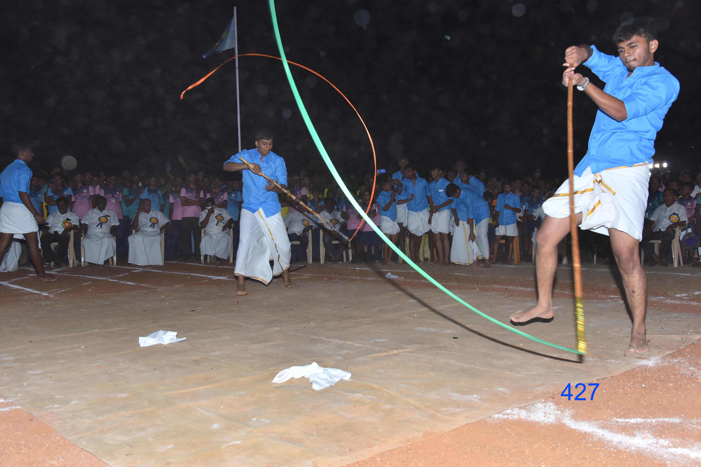

Explore
The History of Our Institution

C.K.T. Matriculation Higher Secondary School, Kumaragiri was established in the year 1999 with 300 students and 20 teachers for the benefit of the students of Kovilpatti and its neighborhood. School functions under the auspices of Chennai Kammavar Trust. The school was recognized by the Government of Tamilnadu in 2000 and now has classes up to Std XII.
Our school is situated in a sprawling campus. The 30 Acres land is abutting Kovilpatti - Ettayapuram Road away from the hustle and bustle of the crowded atmosphere. The school has well ventilated, spacious class rooms furnished with ample furniture. The school has vast playgrounds, beautiful gardens and kids playground...
Events in Our School
